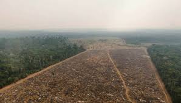

¿QUÉ ES EL CAMBIO CLIMÁTICO?
El cambio climático es el fenómeno que describe las transformaciones a largo plazo en los patrones de clima global. Aunque en la historia de la Tierra siempre ha habido fluctuaciones naturales en el clima, lo que se observa hoy en día es un cambio mucho más rápido y fuerte, impulsado principalmente por las actividades humanas. Esto incluye el aumento de la temperatura promedio de la Tierra, cambios en las precipitaciones, y fenómenos meteorológicos extremos más frecuentes, como tormentas, sequías e inundaciones.
Lo que hace único al cambio climático actual es que, debido a las emisiones de gases contaminantes, especialmente dióxido de carbono (CO₂), estamos alterando el equilibrio del clima de manera que afecta a todos los ecosistemas del planeta.
Este cambio no se limita a un área geográfica o estación del año: es un proceso global que afecta a todo el mundo, alterando el medio ambiente, los recursos naturales y, en última instancia, las vidas humanas.

¿CÓMO SE CAUSA EL CAMBIO CLIMÁTICO?
El cambio climático es causado por la acumulación de gases de efecto invernadero (GEI) en la atmósfera, que atrapan el calor. Las principales causas de esta acumulación son:
1. Emisión de gases de efecto invernadero: La quema de combustibles fósiles (carbón, petróleo, gas) para energía y transporte libera dióxido de carbono (CO₂) y otros gases como metano (CH₄) y óxidos de nitrógeno (N₂O), que intensifican el calentamiento global.
2. Deforestación: La tala de bosques reduce la capacidad de la Tierra para absorber CO₂, liberando el carbono almacenado en los árboles.
3. Agricultura industrial: La ganadería y el uso de fertilizantes liberan metano (CH₄) y óxidos de nitrógeno (N₂O), gases con gran impacto en el cambio climático.
4. Desperdicio de alimentos: Los residuos orgánicos en vertederos generan metano debido a su descomposición anaeróbica.
5. Productos químicos industriales: Los gases como los hidrofluorocarbonos (HFC), utilizados en refrigerantes, contribuyen al calentamiento global y dañan la capa de ozono.

¿QUÉ CAUSA EL CAMBIO CLIMÁTICO?
Las principales consecuencias del cambio climático están directamente relacionadas con las alteraciones del clima,
que afectan tanto a los seres humanos como a los ecosistemas. Algunas de las principales causas son:
-
 Aumento de Temperaturas Globales: Las olas de calor más frecuentes y extremas afectan la salud humana, la productividad agrícola y aumentan las enfermedades relacionadas con el calor.
Aumento de Temperaturas Globales: Las olas de calor más frecuentes y extremas afectan la salud humana, la productividad agrícola y aumentan las enfermedades relacionadas con el calor.
Las temperaturas extremas afectan la salud pública, la agricultura y provocan un aumento de enfermedades cardiovasculares y respiratorias.
-
 Desglaciación y aumento del nivel del mar: El derretimiento de glaciares y casquetes polares amenaza las zonas costeras y aumenta el nivel del mar.
Desglaciación y aumento del nivel del mar: El derretimiento de glaciares y casquetes polares amenaza las zonas costeras y aumenta el nivel del mar.
El deshielo de glaciares y la expansión térmica del agua contribuyen al aumento del nivel del mar, amenazando islas y regiones bajas.
-
Fenómenos Meteorológicos Extremos: Huracanes, ciclones, tormentas y sequías más intensas, aumentando los daños y desplazamientos forzados.
El cambio climático incrementa la frecuencia y severidad de fenómenos como huracanes y tormentas, causando pérdidas humanas y materiales.
-
 Desplazamiento de Especies y Pérdida de Biodiversidad: Los ecosistemas se modifican rápidamente, llevando a la extinción de muchas especies.
Desplazamiento de Especies y Pérdida de Biodiversidad: Los ecosistemas se modifican rápidamente, llevando a la extinción de muchas especies.
El cambio climático está alterando los hábitats de muchas especies, lo que lleva a la pérdida de biodiversidad y afecta la cadena alimentaria.
-

Alteración de la Agricultura: Cambios en las precipitaciones y temperaturas que afectan la producción de alimentos.
El aumento de temperaturas y los cambios en las lluvias alteran la productividad agrícola, afectando la calidad y cantidad de las cosechas.
¿CÓMO CONTRARRESTAR EL CAMBIO CLIMÁTICO?
Existen varias estrategias para contrarrestar el cambio climático y mitigar sus efectos. Algunas de las principales son:
-
 Reducir las Emisiones de Gases de Efecto Invernadero: Invertir en energías renovables como la solar, eólica, geotérmica e hidroeléctrica.
Reducir las Emisiones de Gases de Efecto Invernadero: Invertir en energías renovables como la solar, eólica, geotérmica e hidroeléctrica.
La transición hacia fuentes de energía limpias y sostenibles es clave para disminuir las emisiones de CO₂ y frenar el cambio climático.
-
 Reforestar y Proteger los Bosques: Los bosques son esenciales para absorber CO₂. Detener la deforestación es crucial.
Reforestar y Proteger los Bosques: Los bosques son esenciales para absorber CO₂. Detener la deforestación es crucial.
La protección y expansión de los bosques ayuda a reducir las concentraciones de CO₂ en la atmósfera, contribuyendo a mitigar el cambio climático.
-
 Fomentar el Transporte Público y la Movilidad Eléctrica: Reducir el uso del transporte privado y promover alternativas sostenibles.
Fomentar el Transporte Público y la Movilidad Eléctrica: Reducir el uso del transporte privado y promover alternativas sostenibles.
El uso de vehículos eléctricos y el fomento del transporte público ayudan a reducir las emisiones de gases contaminantes.
-
 Fomentar Prácticas Agrícolas Sostenibles: Técnicas como la rotación de cultivos y la agricultura de precisión para reducir las emisiones agrícolas.
Fomentar Prácticas Agrícolas Sostenibles: Técnicas como la rotación de cultivos y la agricultura de precisión para reducir las emisiones agrícolas.
La agricultura sostenible mejora la salud del suelo y reduce las emisiones de gases de efecto invernadero como el metano.
-
 Adaptación a los Cambios Climáticos Inevitable: Fortalecer infraestructuras y proteger zonas vulnerables frente a fenómenos extremos.
Adaptación a los Cambios Climáticos Inevitable: Fortalecer infraestructuras y proteger zonas vulnerables frente a fenómenos extremos.
A pesar de los esfuerzos de mitigación, la adaptación es clave para proteger las comunidades y los bienes de los efectos del cambio climático.
-
 Promoción de la Educación y la Concienciación: Sensibilizar sobre el impacto del cambio climático y fomentar hábitos sostenibles.
Promoción de la Educación y la Concienciación: Sensibilizar sobre el impacto del cambio climático y fomentar hábitos sostenibles.
La educación y concienciación pública son esenciales para generar un cambio de comportamiento a nivel individual, comunitario y empresarial.
NOTAS SOBRE EL CAMBIO CLIMÁTICO
-
{% for el in cards %}
-

{{ el.title }}
{{ el.subtitle }}
{% endfor %}